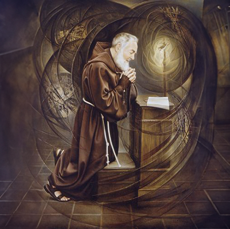

Nombre:
Pío (Masculino)
Nació:
En Pietrelcina, en el actual Italia
Falleció:
En San Giovanni Rotondo, en el
actual Italia
Proceso:
hechovenerable el 18 de diciembre
de 1997 por Juan Pablo II
Beatificado:
El 2 de mayo de 1999 por Juan
Pablo II
Canonizado:
El 16 de junio de 2002 por Juan
Pablo II
Celebración:
23 de septiembre
Religioso:
De la Orden de los Hermanos
Menores Capuchinos